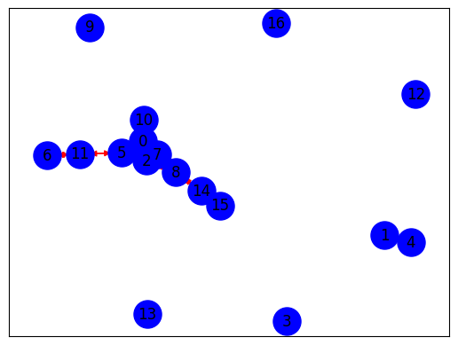

!pip install rougeRequirement already satisfied: rouge in /usr/local/lib/python3.10/dist-packages (1.0.1)
Requirement already satisfied: six in /usr/local/lib/python3.10/dist-packages (from rouge) (1.16.0)!pip install rougeRequirement already satisfied: rouge in /usr/local/lib/python3.10/dist-packages (1.0.1)
Requirement already satisfied: six in /usr/local/lib/python3.10/dist-packages (from rouge) (1.16.0)import pandas as pd
import nltk
import networkx as nx
import matplotlib.pyplot as plt
import re
from sklearn.feature_extraction.text import TfidfVectorizer
from sklearn.metrics.pairwise import cosine_similarity
from nltk.corpus import stopwords
from rouge import Rougenltk.download('punkt')
nltk.download("stopwords")[nltk_data] Downloading package punkt to /root/nltk_data...
[nltk_data] Package punkt is already up-to-date!
[nltk_data] Downloading package stopwords to /root/nltk_data...
[nltk_data] Package stopwords is already up-to-date!TrueData yang digunakan menggunakan hasil crawling data pada website CNN Indonesia dalam kategori berita nasional.
from google.colab import drive
drive.mount('/content/drive')
csv_path = '/content/drive/My Drive/Task/Pencarian dan Penambangan Web/Tugas 2/data/berita-cnn.csv'
df = pd.read_csv(csv_path)
dfDrive already mounted at /content/drive; to attempt to forcibly remount, call drive.mount("/content/drive", force_remount=True).| judul | berita | |
|---|---|---|
| 0 | Dirjen Kemendagri Safrizal ZA Jadi Pj Gubernu... | Menteri Dalam Negeri (Mendagri) Tito Karnavian... |
| 1 | Ganjar Temui Gus Mus di Rembang, Bahas Polemi... | Bakal capres PDIP Ganjar Pranowo mengunjungi k... |
| 2 | Nomor Urut Capres-Cawapres Diundi KPU Besok | Komisi Pemilihan Umum (KPU) RI bakal melaksana... |
| 3 | Utut Adianto Pimpin Panja Netralitas TNI di P... | Komisi I DPR sudah menyepakati pembentukan Pan... |
| 4 | Istri Cak Nur Curhat ke Gus Mus: Nepotisme Di... | Sejumlah tokoh bangsa yang mengatasnamakan dir... |
| 5 | Eks Stafsus SBY Velix Wanggai Jadi Pj Gubernu... | Presiden Joko Widodo menunjuk mantan Staf Khus... |
| 6 | KPU Resmi Tetapkan Prabowo, Ganjar, Anies seb... | Komisi Pemilihan Umum (KPU) resmi menetapkan t... |
| 7 | Eks Kadis PUPR Papua Didakwa Terima Suap & Gr... | Kepala Dinas Pekerjaan Umum dan Perumahan Raky... |
| 8 | Fatia Maulidiyanti Dituntut 3,5 Tahun Penjara... | Aktivitis Hak Asasi Manusia (HAM) Fatia Maulid... |
| 9 | KPK Panggil Keponakan SYL Istri Kapolrestabes... | Komisi Pemberantasan Korupsi (KPK) memanggil k... |
| 10 | Haris Azhar Dituntut 4 Tahun Penjara Kasus Lo... | Aktivitis Hak Asasi Manusia (HAM) Haris Azhar ... |
| 11 | KPK Dalami Dugaan Kartu Anggota Kasino SYL | Komisi Pemberantasan Korupsi (KPK) tengah mend... |
| 12 | Pelecehan Anggota BEM UNY Hoaks, Polisi Tangk... | Polisi memastikan dugaan kasus pelecehan mahas... |
| 13 | Dinkes DKI: Kasus Cacar Monyet di Jakarta Cap... | Dinas Kesehatan (Dinkes) DKI Jakarta melaporka... |
| 14 | Pemkab Ungkap Susun 6 Dimensi pada Perencanaa... | Kabupaten Klaten menyatakan memiliki enam dime... |
| 15 | Sri Mulyani Sebut Petugas Kesehatan Merupakan... | Pemerintah Kabupaten Klaten menggelar Upacara ... |
| 16 | Klaten Ambil Bagian pada Evaluasi Tahap II Sm... | Kabupaten Klaten turut ambil bagian sebagai sa... |
| 17 | Puncak Peringatan HKN Ke-59, Bupati Klaten Ap... | Bupati Klaten, Jawa Tengah, Sri Mulyani, menya... |
| 18 | Nakes Klaten Diminta Jadi Pelopor Budaya Hidu... | Bupati Klaten, Sri Mulyani, meminta tenaga kes... |
| 19 | FOTO: Suhartoyo Resmi Jadi Ketua MK Gantikan ... | Hakim konstitusi Suhartoyo resmi dilantik seba... |
| 20 | Fit and Proper Test Panglima TNI Singgung Isu... | Calon Panglima TNI Jenderal Agus Subiyanto men... |
| 21 | Kapolda Metro Sebut Tersangka Kasus Pemerasan... | Kapolda Metro Jaya Irjen Karyoto menyebut sege... |
| 22 | Irjen Karyoto soal Firli: Kita Lihat Saja Bes... | Kapolda Metro Jaya Irjen Karyoto angkat suara ... |
| 23 | Suhartoyo Janji Segera Bentuk MKMK Permanen | Ketua Mahkamah Konstitusi (MK) Suhartoyo berja... |
| 24 | Mahfud Singgung Menteri Jokowi Ditangkap Koru... | Menko Polhukam Mahfud MD menyinggung banyaknya... |
| 25 | Mahfud Respons Dugaan Saling Sandera KPK-Pold... | Menko Polhukam Mahfud MD angkat suara soal ada... |
| 26 | Agus Subiyanto di DPR: Jika Ingin Damai, Bers... | Kepala Staf Angkatan Darat (KSAD) sekaligus ca... |
| 27 | OTT KPK di Sorong Terkait Pengondisian Temuan... | Komisi Pemberantasan Korupsi (KPK) mengungkapk... |
| 28 | KPK Total Tangkap 5 Orang Terkait OTT di Sorong | Komisi Pemberantasan Korupsi (KPK) total menan... |
| 29 | Anwar Usman Absen di Pelantikan Ketua MK, Izi... | Hakim Konstitusi Anwar Usman tidak hadir dalam... |
| 30 | KPK Total Tangkap 5 Orang Terkait OTT di Sorong | Komisi Pemberantasan Korupsi (KPK) total menan... |
| 31 | Anwar Usman Absen di Pelantikan Ketua MK, Izi... | Hakim Konstitusi Anwar Usman tidak hadir dalam... |
| 32 | Komisi I DPR Sepakati Agus Subiyanto Jadi Pan... | Komisi I DPR secara resmi menyepakati KSAD Jen... |
| 33 | Jelang Penetapan Capres-Cawapres, Jalan Depan... | Jalan Imam Bonjol depan kantor Komisi Pemiliha... |
| 34 | Massa Atribut Serba Hitam Demo di KPU Jelang ... | Demonstrasi terjadi di depan kantor Komisi Pem... |
| 35 | PAN Solid Dukung Prabowo-Gibran dan Menang Pi... | Wakil Bendahara Umum Partai Amanat Nasional (P... |
| 36 | LHKPN Ketua MK Suhartoyo, Punya Harta Rp14,7 ... | Ketua Mahkamah Konstitusi (MK) terpilih pengga... |
| 37 | Fit & Proper Test, Agus Janji Ingatkan Prajur... | Calon Panglima TNI Jenderal Agus Subiyanto ber... |
| 38 | Yasonna soal Wamenkumham Jadi Tersangka: Sila... | Menteri Hukum dan Hak Asasi Manusia (Menkumham... |
| 39 | Ketua MK Suhartoyo Menangis Saat Pidato Soal ... | Hakim Mahkamah Konstitusi (MK) Suhartoyo menan... |
| 40 | Bahlil Heran Gibran Dipersoalkan: Banyak Ment... | Ketua Dewan Pembina Relawan Pengusaha Nasional... |
| 41 | Gibran: Laporkan Saja ke Bawaslu Jika Ada Kec... | Wali Kota Solo sekaligus bakal cawapres Gibran... |
| 42 | Bupati Dhito: Batik Kediri Siap Masuk Kancah ... | Bupati Kediri Hanindhito Himawan Pramana menya... |
| 43 | Sempat Macet Parah, Jalan Mampang Prapatan Ar... | Kemacetan sempat terjadi di Jalan Mampang Prap... |
| 44 | Pejabat Sorong dan Pegawai BPK Terjaring OTT ... | Komisi Pemberantasan Korupsi (KPK) melakukan o... |
| 45 | Fit and Proper Test Calon Panglima TNI, Jende... | Kepala Staf Angkatan Darat (KSAD) sekaligus ca... |
| 46 | VIDEO: Momen Suhartoyo Resmi Dilantik Jadi Ke... | Mahkamah Konstitusi resmi melantik Suhartoyo m... |
| 47 | Wali Kota Semarang Ingin Masyarakat Tak Berga... | Festival pangan pendamping beras bertajuk Prom... |
| 48 | Panglima TNI-Kapolri ke Rumah Agus Subiyanto ... | Panglima TNI Laksamana Yudo Margono dan Kapolr... |
| 49 | Suhartoyo Resmi Jadi Ketua MK Gantikan Anwar ... | Hakim konstitusi Suhartoyo resmi dilantik seba... |
Untuk meringkas suatu dokumen, maka kita hanya memerlukan satu sampel berita yang akan digunakan dengan menggunakan berita pertama
berita = df['berita'].iloc[0]Pada analisis ringkasan dokumen kali ini akan menggunakan 2 metode pengujian, pengujian pertama akan dilakukan langkah ringkasan berita tanpa menggunakan preprocessing dan tahapan pengujian kedua berita yang diringkas akan menggunakan tahapan preprocessing. Tahapan preprocessing ini antara lain yaitu menghapus angka, simbol dan stopword pada berita.
def preprocessing(text):
text = re.sub(r'\d+', '', text)
text = re.sub(r'[^\w\s.]', '', text)
text = text.lower()
stop_words = set(stopwords.words('indonesian'))
words = text.split()
filtered_words = [word for word in words if word.lower() not in stop_words]
preprocessing_text = ' '.join(filtered_words)
return preprocessing_textkalimat_preprocessing = preprocessing(berita)Ekstraksi fitur pada tahapan ini menggunakan TF-IDF untuk membentuk vektor pada setiap kalimatnya, sedangkan fitur yang akan digunakan pada vektor TF-IDF ini meliputi term pada keseluruhan dokumen.
kalimat = nltk.sent_tokenize(berita) #memecah dokumen berdasarkan kalimatnya tanpa preprocessingkalimat_preprocessing = nltk.sent_tokenize(kalimat_preprocessing) #memecah dokumen berdasarkan kalimatnya menggunakan preprocessingTerm Frequency-Inverse Document Frequency (TF-IDF) adalah vektor yang digunakan untuk mengevaluasi pentingnya kata-kata dalam sebuah dokumen. Nilai frekuensi kemunculan kata dalam setiap dokumen ini menunjukkan seberapa penting kata tersebut dalam dokumen. Berikut merupakan rumus untuk menghitung TF-IDF:
\[W_{d,t} = tf_{t,d} \cdot idf_{t,d}\]
Keterangan =
\(W_{d,t}\) = Nilai Term Frequency untuk term (t) dalam dokumen (d).
\(tf_{t,d}\) = Frekuensi kemunculan term (t) dalam dokumen (d).
\(idf_{t,d}\) = Inverse Document Frequency Nilai kebalikan frekuensi dokumen term (t) dalam dokumen (d).
Pada dasarnya TF-IDF adalah gabungan dari Term Frequency (TF) dan Inverse Document Frequency (IDF) sehingga sebelum kita membentuk nilai TFIDF, maka kita harus menghitung kedua nilai tersebut. Term Frequency (TF) merupakan perhitungan yang digunakan untuk menentukan seberapa sering kata-kata muncul dalam sebuah dokumen.
\[tf= \frac{tf}{max(tf)}\]
Keterangan =
\(tf\) = banyaknya kata yang dicari dalam dokumen
\(max(tf)\) = jumlah kemunculan term terbanyak pada dokumen yang sama
Sedangkan Inverse Document Frequency (IDF) menilai kata-kata yang sering muncul sebagai kurang signifikan karena kemunculannya dalam banyak dokumen. Semakin rendah nilai IDF, maka kata tersebut akan dianggap kurang berarti dan sebaliknya, semakin tinggi nilai IDF maka kata tersebut akan dianggap lebih relevan atau penting dalam dokumen tersebut.
\[idf_{t}= \frac{D}{max(df_{t})}\]
Keterangan =
\(D\) = total dokumen
\(df(t)\) = jumlah dokumen yang mengandung term (t)
TF-IDF Tanpa Preprocessing
tfidf_vectorizer = TfidfVectorizer()
tfidf = tfidf_vectorizer.fit_transform(kalimat)
terms = tfidf_vectorizer.get_feature_names_out()
tfidf = pd.DataFrame(data=tfidf.toarray(), columns=terms)
tfidf| 11 | 13 | 19 | 2024 | adalah | administrasi | adwil | akan | awasi | bangka | ... | velix | vernando | video | wakil | wali | wanggai | wawasan | wilayah | yang | za | |
|---|---|---|---|---|---|---|---|---|---|---|---|---|---|---|---|---|---|---|---|---|---|
| 0 | 0.000000 | 0.000000 | 0.000000 | 0.000000 | 0.000000 | 0.000000 | 0.000000 | 0.000000 | 0.000000 | 0.262213 | ... | 0.000000 | 0.000000 | 0.000000 | 0.00000 | 0.000000 | 0.000000 | 0.000000 | 0.000000 | 0.000000 | 0.300296 |
| 1 | 0.269719 | 0.269719 | 0.000000 | 0.000000 | 0.000000 | 0.000000 | 0.000000 | 0.000000 | 0.000000 | 0.000000 | ... | 0.000000 | 0.000000 | 0.000000 | 0.00000 | 0.000000 | 0.000000 | 0.000000 | 0.000000 | 0.000000 | 0.000000 |
| 2 | 0.000000 | 0.000000 | 0.000000 | 0.000000 | 0.000000 | 0.000000 | 0.000000 | 0.000000 | 0.000000 | 0.000000 | ... | 0.225098 | 0.315524 | 0.000000 | 0.00000 | 0.000000 | 0.275510 | 0.000000 | 0.000000 | 0.000000 | 0.000000 |
| 3 | 0.000000 | 0.000000 | 0.000000 | 0.000000 | 0.162701 | 0.000000 | 0.000000 | 0.207738 | 0.000000 | 0.000000 | ... | 0.000000 | 0.000000 | 0.000000 | 0.00000 | 0.000000 | 0.000000 | 0.000000 | 0.000000 | 0.415477 | 0.000000 |
| 4 | 0.255375 | 0.255375 | 0.000000 | 0.000000 | 0.000000 | 0.000000 | 0.000000 | 0.000000 | 0.000000 | 0.000000 | ... | 0.000000 | 0.000000 | 0.000000 | 0.00000 | 0.000000 | 0.000000 | 0.000000 | 0.000000 | 0.000000 | 0.000000 |
| 5 | 0.000000 | 0.000000 | 0.000000 | 0.000000 | 0.000000 | 0.000000 | 0.000000 | 0.000000 | 0.000000 | 0.000000 | ... | 0.000000 | 0.000000 | 0.000000 | 0.00000 | 0.000000 | 0.000000 | 0.000000 | 0.000000 | 0.000000 | 0.000000 |
| 6 | 0.000000 | 0.000000 | 0.000000 | 0.000000 | 0.000000 | 0.000000 | 0.000000 | 0.000000 | 0.000000 | 0.000000 | ... | 0.000000 | 0.000000 | 0.000000 | 0.00000 | 0.000000 | 0.000000 | 0.000000 | 0.314751 | 0.000000 | 0.000000 |
| 7 | 0.000000 | 0.000000 | 0.000000 | 0.000000 | 0.000000 | 0.000000 | 0.000000 | 0.000000 | 0.000000 | 0.232083 | ... | 0.189617 | 0.000000 | 0.000000 | 0.00000 | 0.000000 | 0.232083 | 0.000000 | 0.000000 | 0.000000 | 0.000000 |
| 8 | 0.000000 | 0.000000 | 0.000000 | 0.000000 | 0.000000 | 0.000000 | 0.000000 | 0.000000 | 0.000000 | 0.000000 | ... | 0.261304 | 0.000000 | 0.000000 | 0.00000 | 0.000000 | 0.000000 | 0.000000 | 0.000000 | 0.000000 | 0.000000 |
| 9 | 0.000000 | 0.000000 | 0.000000 | 0.312276 | 0.000000 | 0.000000 | 0.000000 | 0.000000 | 0.000000 | 0.000000 | ... | 0.000000 | 0.000000 | 0.000000 | 0.00000 | 0.000000 | 0.000000 | 0.000000 | 0.000000 | 0.000000 | 0.000000 |
| 10 | 0.000000 | 0.000000 | 0.000000 | 0.000000 | 0.000000 | 0.000000 | 0.000000 | 0.000000 | 0.000000 | 0.000000 | ... | 0.000000 | 0.000000 | 0.000000 | 0.00000 | 0.000000 | 0.000000 | 0.000000 | 0.000000 | 0.000000 | 0.000000 |
| 11 | 0.000000 | 0.000000 | 0.000000 | 0.000000 | 0.000000 | 0.000000 | 0.000000 | 0.000000 | 0.000000 | 0.000000 | ... | 0.000000 | 0.000000 | 0.000000 | 0.00000 | 0.178791 | 0.000000 | 0.000000 | 0.000000 | 0.000000 | 0.000000 |
| 12 | 0.000000 | 0.000000 | 0.000000 | 0.000000 | 0.194693 | 0.248586 | 0.248586 | 0.000000 | 0.248586 | 0.000000 | ... | 0.000000 | 0.000000 | 0.000000 | 0.00000 | 0.000000 | 0.000000 | 0.000000 | 0.000000 | 0.000000 | 0.000000 |
| 13 | 0.000000 | 0.000000 | 0.279549 | 0.000000 | 0.000000 | 0.000000 | 0.000000 | 0.000000 | 0.000000 | 0.000000 | ... | 0.000000 | 0.000000 | 0.000000 | 0.00000 | 0.000000 | 0.000000 | 0.000000 | 0.000000 | 0.000000 | 0.000000 |
| 14 | 0.000000 | 0.000000 | 0.000000 | 0.000000 | 0.279706 | 0.000000 | 0.000000 | 0.000000 | 0.000000 | 0.000000 | ... | 0.254781 | 0.000000 | 0.000000 | 0.31184 | 0.000000 | 0.000000 | 0.000000 | 0.000000 | 0.000000 | 0.000000 |
| 15 | 0.000000 | 0.000000 | 0.000000 | 0.000000 | 0.000000 | 0.000000 | 0.000000 | 0.000000 | 0.000000 | 0.000000 | ... | 0.000000 | 0.000000 | 0.000000 | 0.23924 | 0.000000 | 0.000000 | 0.273986 | 0.000000 | 0.000000 | 0.000000 |
| 16 | 0.000000 | 0.000000 | 0.000000 | 0.000000 | 0.000000 | 0.000000 | 0.000000 | 0.000000 | 0.000000 | 0.000000 | ... | 0.000000 | 0.000000 | 0.447214 | 0.00000 | 0.000000 | 0.000000 | 0.000000 | 0.000000 | 0.000000 | 0.000000 |
17 rows × 172 columns
TF-IDF Menggunakan Preprocessing
tfidf_vectorizer = TfidfVectorizer()
tfidf_preprocessing = tfidf_vectorizer.fit_transform(kalimat_preprocessing)
terms = tfidf_vectorizer.get_feature_names_out()
tfidf_preprocessing = pd.DataFrame(data=tfidf_preprocessing.toarray(), columns=terms)
tfidf_preprocessing| administrasi | adwil | awasi | bangka | bapakbapak | belitung | berharap | berjalan | berperan | bersamaan | ... | tolong | tugas | velix | vernando | wakil | wali | wanggai | wawasan | wilayah | za | |
|---|---|---|---|---|---|---|---|---|---|---|---|---|---|---|---|---|---|---|---|---|---|
| 0 | 0.000000 | 0.000000 | 0.000000 | 0.294052 | 0.0000 | 0.294052 | 0.000000 | 0.000000 | 0.000000 | 0.000000 | ... | 0.0000 | 0.000000 | 0.000000 | 0.000000 | 0.000000 | 0.0000 | 0.000000 | 0.000000 | 0.000000 | 0.336759 |
| 1 | 0.000000 | 0.000000 | 0.000000 | 0.000000 | 0.0000 | 0.000000 | 0.000000 | 0.000000 | 0.000000 | 0.000000 | ... | 0.0000 | 0.000000 | 0.000000 | 0.000000 | 0.000000 | 0.0000 | 0.000000 | 0.000000 | 0.000000 | 0.000000 |
| 2 | 0.000000 | 0.000000 | 0.000000 | 0.000000 | 0.0000 | 0.000000 | 0.000000 | 0.000000 | 0.000000 | 0.387236 | ... | 0.0000 | 0.000000 | 0.276258 | 0.387236 | 0.000000 | 0.0000 | 0.338128 | 0.000000 | 0.000000 | 0.000000 |
| 3 | 0.000000 | 0.000000 | 0.000000 | 0.000000 | 0.0000 | 0.000000 | 0.308065 | 0.000000 | 0.000000 | 0.000000 | ... | 0.0000 | 0.308065 | 0.000000 | 0.000000 | 0.000000 | 0.0000 | 0.000000 | 0.000000 | 0.000000 | 0.000000 |
| 4 | 0.000000 | 0.000000 | 0.000000 | 0.000000 | 0.0000 | 0.000000 | 0.000000 | 0.380838 | 0.000000 | 0.000000 | ... | 0.0000 | 0.000000 | 0.000000 | 0.000000 | 0.000000 | 0.0000 | 0.000000 | 0.000000 | 0.000000 | 0.000000 |
| 5 | 0.000000 | 0.000000 | 0.000000 | 0.000000 | 0.0000 | 0.000000 | 0.000000 | 0.000000 | 0.000000 | 0.000000 | ... | 0.0000 | 0.000000 | 0.000000 | 0.000000 | 0.000000 | 0.0000 | 0.000000 | 0.000000 | 0.000000 | 0.000000 |
| 6 | 0.000000 | 0.000000 | 0.000000 | 0.000000 | 0.0000 | 0.000000 | 0.000000 | 0.000000 | 0.000000 | 0.000000 | ... | 0.0000 | 0.000000 | 0.000000 | 0.000000 | 0.000000 | 0.0000 | 0.000000 | 0.000000 | 0.515543 | 0.000000 |
| 7 | 0.000000 | 0.000000 | 0.000000 | 0.260917 | 0.0000 | 0.260917 | 0.000000 | 0.000000 | 0.000000 | 0.000000 | ... | 0.0000 | 0.000000 | 0.213175 | 0.000000 | 0.000000 | 0.0000 | 0.260917 | 0.000000 | 0.000000 | 0.000000 |
| 8 | 0.000000 | 0.000000 | 0.000000 | 0.000000 | 0.0000 | 0.000000 | 0.000000 | 0.000000 | 0.000000 | 0.000000 | ... | 0.0000 | 0.411704 | 0.336372 | 0.000000 | 0.000000 | 0.0000 | 0.000000 | 0.000000 | 0.000000 | 0.000000 |
| 9 | 0.000000 | 0.000000 | 0.000000 | 0.000000 | 0.0000 | 0.000000 | 0.000000 | 0.000000 | 0.000000 | 0.000000 | ... | 0.0000 | 0.000000 | 0.000000 | 0.000000 | 0.000000 | 0.0000 | 0.000000 | 0.000000 | 0.000000 | 0.000000 |
| 10 | 0.000000 | 0.000000 | 0.000000 | 0.000000 | 0.0000 | 0.000000 | 0.000000 | 0.000000 | 0.000000 | 0.000000 | ... | 0.0000 | 0.000000 | 0.000000 | 0.000000 | 0.000000 | 0.0000 | 0.000000 | 0.000000 | 0.000000 | 0.000000 |
| 11 | 0.000000 | 0.000000 | 0.000000 | 0.000000 | 0.2477 | 0.000000 | 0.216287 | 0.000000 | 0.000000 | 0.000000 | ... | 0.2477 | 0.000000 | 0.000000 | 0.000000 | 0.000000 | 0.2477 | 0.000000 | 0.000000 | 0.000000 | 0.000000 |
| 12 | 0.261989 | 0.261989 | 0.261989 | 0.000000 | 0.0000 | 0.000000 | 0.000000 | 0.000000 | 0.000000 | 0.000000 | ... | 0.0000 | 0.000000 | 0.000000 | 0.000000 | 0.000000 | 0.0000 | 0.000000 | 0.000000 | 0.000000 | 0.000000 |
| 13 | 0.000000 | 0.000000 | 0.000000 | 0.000000 | 0.0000 | 0.000000 | 0.000000 | 0.000000 | 0.358922 | 0.000000 | ... | 0.0000 | 0.000000 | 0.000000 | 0.000000 | 0.000000 | 0.0000 | 0.000000 | 0.000000 | 0.000000 | 0.000000 |
| 14 | 0.000000 | 0.000000 | 0.000000 | 0.000000 | 0.0000 | 0.000000 | 0.000000 | 0.000000 | 0.000000 | 0.000000 | ... | 0.0000 | 0.000000 | 0.317972 | 0.000000 | 0.389184 | 0.0000 | 0.000000 | 0.000000 | 0.000000 | 0.000000 |
| 15 | 0.000000 | 0.000000 | 0.000000 | 0.000000 | 0.0000 | 0.000000 | 0.000000 | 0.000000 | 0.000000 | 0.000000 | ... | 0.0000 | 0.000000 | 0.000000 | 0.000000 | 0.251545 | 0.0000 | 0.000000 | 0.288078 | 0.000000 | 0.000000 |
| 16 | 0.000000 | 0.000000 | 0.000000 | 0.000000 | 0.0000 | 0.000000 | 0.000000 | 0.000000 | 0.000000 | 0.000000 | ... | 0.0000 | 0.000000 | 0.000000 | 0.000000 | 0.000000 | 0.0000 | 0.000000 | 0.000000 | 0.000000 | 0.000000 |
17 rows × 121 columns
Dalam meringkas dokumen ini diperlukan untuk membentuk graph sebagai gambaran antara kedekatan pada masing-masing kalimat, sehingga dalam ringkasan dokumen yang dihasilkan akan memunculkan kalimat-kalimat penting dan memiliki kedekatan di setiap dokumennya.
Cosine similarity digunakan untuk mengukur seberapa mirip dua vektor dalam ruang berdimensi banyak. Hasil dari cosine similarity ini akan menentukan apakah vektor tersebut menuju ke arah yang sama. Semakin kecil sudut antara dua vektor, maka semakin mirip satu sama lain sedangkan begitu juga sebaliknya, semakin besar nilai cosine similarity maka vektor tersebut dianggap jauh kemiripannya. Dalam ringkasan dokumen ini penting untuk menghitung nilai cosine similarity untuk mengetahui hubungan kesamaan antara kalimat satu dengan kalimat lainnya. Vektor yang digunakan untuk menghitung nilai cosine simmilarity ini adalah hasil dari TF-IDF pada langkah sebelumnya. Berikut merupakan rumus yang digunakan untuk menghitung nilai cosine simmilarity.
\[simmilarity(A, B) = \frac{A \cdot B}{|A||B|}\]
Keterangan =
A.B = Vector dot product dari A dan B dihitung dengan \(\sum_{i=1}^n x_{k}y_{k}\)
|A| = Panjang vektor A dihitung dengan \(\sum_{i=1}^n x_{k}^2\)
|B| = Panjang vektor A dihitung dengan \(\sum_{i=1}^n y_{k}^2\)
Cosine Similarity Tanpa Preprocessing
cosine = cosine_similarity(tfidf, tfidf)similarity = pd.DataFrame(cosine, columns=range(len(kalimat)), index=range(len(kalimat)))
similarity| 0 | 1 | 2 | 3 | 4 | 5 | 6 | 7 | 8 | 9 | 10 | 11 | 12 | 13 | 14 | 15 | 16 | |
|---|---|---|---|---|---|---|---|---|---|---|---|---|---|---|---|---|---|
| 0 | 1.000000 | 0.000000 | 0.183156 | 0.031750 | 0.077184 | 0.106877 | 0.000000 | 0.234579 | 0.000000 | 0.034685 | 0.116650 | 0.067043 | 0.077952 | 0.042725 | 0.000000 | 0.000000 | 0.0 |
| 1 | 0.000000 | 1.000000 | 0.000000 | 0.000000 | 0.206638 | 0.000000 | 0.041888 | 0.035372 | 0.048745 | 0.000000 | 0.000000 | 0.000000 | 0.058545 | 0.000000 | 0.047528 | 0.000000 | 0.0 |
| 2 | 0.183156 | 0.000000 | 1.000000 | 0.000000 | 0.034132 | 0.112296 | 0.060918 | 0.276659 | 0.200600 | 0.096883 | 0.032666 | 0.041731 | 0.033793 | 0.000000 | 0.057351 | 0.000000 | 0.0 |
| 3 | 0.031750 | 0.000000 | 0.000000 | 1.000000 | 0.000000 | 0.000000 | 0.000000 | 0.000000 | 0.058014 | 0.000000 | 0.029594 | 0.075541 | 0.031677 | 0.044278 | 0.045509 | 0.000000 | 0.0 |
| 4 | 0.077184 | 0.206638 | 0.034132 | 0.000000 | 1.000000 | 0.032889 | 0.000000 | 0.000000 | 0.000000 | 0.033780 | 0.041664 | 0.059209 | 0.000000 | 0.041611 | 0.000000 | 0.061096 | 0.0 |
| 5 | 0.106877 | 0.000000 | 0.112296 | 0.000000 | 0.032889 | 1.000000 | 0.000000 | 0.187934 | 0.000000 | 0.083440 | 0.083680 | 0.101223 | 0.032563 | 0.000000 | 0.000000 | 0.042397 | 0.0 |
| 6 | 0.000000 | 0.041888 | 0.060918 | 0.000000 | 0.000000 | 0.000000 | 1.000000 | 0.036043 | 0.049670 | 0.060291 | 0.000000 | 0.171626 | 0.000000 | 0.000000 | 0.048430 | 0.000000 | 0.0 |
| 7 | 0.234579 | 0.035372 | 0.276659 | 0.000000 | 0.000000 | 0.187934 | 0.036043 | 1.000000 | 0.210924 | 0.000000 | 0.027517 | 0.017577 | 0.068995 | 0.000000 | 0.089207 | 0.055524 | 0.0 |
| 8 | 0.000000 | 0.048745 | 0.200600 | 0.058014 | 0.000000 | 0.000000 | 0.049670 | 0.210924 | 1.000000 | 0.000000 | 0.000000 | 0.099860 | 0.000000 | 0.000000 | 0.222667 | 0.000000 | 0.0 |
| 9 | 0.034685 | 0.000000 | 0.096883 | 0.000000 | 0.033780 | 0.083440 | 0.060291 | 0.000000 | 0.000000 | 1.000000 | 0.000000 | 0.091636 | 0.000000 | 0.000000 | 0.000000 | 0.043546 | 0.0 |
| 10 | 0.116650 | 0.000000 | 0.032666 | 0.029594 | 0.041664 | 0.083680 | 0.000000 | 0.027517 | 0.000000 | 0.000000 | 1.000000 | 0.074679 | 0.000000 | 0.099484 | 0.000000 | 0.000000 | 0.0 |
| 11 | 0.067043 | 0.000000 | 0.041731 | 0.075541 | 0.059209 | 0.101223 | 0.171626 | 0.017577 | 0.099860 | 0.091636 | 0.074679 | 1.000000 | 0.033887 | 0.000000 | 0.000000 | 0.024932 | 0.0 |
| 12 | 0.077952 | 0.058545 | 0.033793 | 0.031677 | 0.000000 | 0.032563 | 0.000000 | 0.068995 | 0.000000 | 0.000000 | 0.000000 | 0.033887 | 1.000000 | 0.000000 | 0.054457 | 0.000000 | 0.0 |
| 13 | 0.042725 | 0.000000 | 0.000000 | 0.044278 | 0.041611 | 0.000000 | 0.000000 | 0.000000 | 0.000000 | 0.000000 | 0.099484 | 0.000000 | 0.000000 | 1.000000 | 0.000000 | 0.058398 | 0.0 |
| 14 | 0.000000 | 0.047528 | 0.057351 | 0.045509 | 0.000000 | 0.000000 | 0.048430 | 0.089207 | 0.222667 | 0.000000 | 0.000000 | 0.000000 | 0.054457 | 0.000000 | 1.000000 | 0.149209 | 0.0 |
| 15 | 0.000000 | 0.000000 | 0.000000 | 0.000000 | 0.061096 | 0.042397 | 0.000000 | 0.055524 | 0.000000 | 0.043546 | 0.000000 | 0.024932 | 0.000000 | 0.058398 | 0.149209 | 1.000000 | 0.0 |
| 16 | 0.000000 | 0.000000 | 0.000000 | 0.000000 | 0.000000 | 0.000000 | 0.000000 | 0.000000 | 0.000000 | 0.000000 | 0.000000 | 0.000000 | 0.000000 | 0.000000 | 0.000000 | 0.000000 | 1.0 |
Cosine Similarity Menggunakan Preprocessing
cosine_preprocessing = cosine_similarity(tfidf_preprocessing, tfidf_preprocessing)similarity_preprocessing = pd.DataFrame(cosine_preprocessing, columns=range(len(kalimat)), index=range(len(kalimat)))
similarity_preprocessing| 0 | 1 | 2 | 3 | 4 | 5 | 6 | 7 | 8 | 9 | 10 | 11 | 12 | 13 | 14 | 15 | 16 | |
|---|---|---|---|---|---|---|---|---|---|---|---|---|---|---|---|---|---|
| 0 | 1.000000 | 0.000000 | 0.152651 | 0.060469 | 0.047436 | 0.131893 | 0.000000 | 0.295745 | 0.000000 | 0.043678 | 0.112841 | 0.104161 | 0.092131 | 0.000000 | 0.000000 | 0.000000 | 0.0 |
| 1 | 0.000000 | 1.000000 | 0.000000 | 0.000000 | 0.105852 | 0.000000 | 0.000000 | 0.000000 | 0.000000 | 0.000000 | 0.000000 | 0.000000 | 0.072819 | 0.000000 | 0.000000 | 0.000000 | 0.0 |
| 2 | 0.152651 | 0.000000 | 1.000000 | 0.000000 | 0.054547 | 0.151663 | 0.000000 | 0.381721 | 0.316919 | 0.050225 | 0.054610 | 0.070955 | 0.043710 | 0.000000 | 0.087843 | 0.000000 | 0.0 |
| 3 | 0.060469 | 0.000000 | 0.000000 | 1.000000 | 0.000000 | 0.000000 | 0.000000 | 0.000000 | 0.126832 | 0.000000 | 0.068464 | 0.111109 | 0.000000 | 0.000000 | 0.000000 | 0.000000 | 0.0 |
| 4 | 0.047436 | 0.105852 | 0.054547 | 0.000000 | 1.000000 | 0.047130 | 0.000000 | 0.000000 | 0.000000 | 0.049395 | 0.000000 | 0.034891 | 0.000000 | 0.000000 | 0.000000 | 0.083649 | 0.0 |
| 5 | 0.131893 | 0.000000 | 0.151663 | 0.000000 | 0.047130 | 1.000000 | 0.000000 | 0.156279 | 0.000000 | 0.043396 | 0.047184 | 0.061307 | 0.037766 | 0.000000 | 0.000000 | 0.000000 | 0.0 |
| 6 | 0.000000 | 0.000000 | 0.000000 | 0.000000 | 0.000000 | 0.000000 | 1.000000 | 0.000000 | 0.000000 | 0.000000 | 0.000000 | 0.097365 | 0.000000 | 0.000000 | 0.000000 | 0.000000 | 0.0 |
| 7 | 0.295745 | 0.000000 | 0.381721 | 0.000000 | 0.000000 | 0.156279 | 0.000000 | 1.000000 | 0.244551 | 0.000000 | 0.042140 | 0.027376 | 0.081749 | 0.000000 | 0.067784 | 0.000000 | 0.0 |
| 8 | 0.000000 | 0.000000 | 0.316919 | 0.126832 | 0.000000 | 0.000000 | 0.000000 | 0.244551 | 1.000000 | 0.000000 | 0.000000 | 0.000000 | 0.000000 | 0.000000 | 0.106957 | 0.000000 | 0.0 |
| 9 | 0.043678 | 0.000000 | 0.050225 | 0.000000 | 0.049395 | 0.043396 | 0.000000 | 0.000000 | 0.000000 | 1.000000 | 0.000000 | 0.098353 | 0.000000 | 0.000000 | 0.000000 | 0.000000 | 0.0 |
| 10 | 0.112841 | 0.000000 | 0.054610 | 0.068464 | 0.000000 | 0.047184 | 0.000000 | 0.042140 | 0.000000 | 0.000000 | 1.000000 | 0.082999 | 0.000000 | 0.000000 | 0.000000 | 0.000000 | 0.0 |
| 11 | 0.104161 | 0.000000 | 0.070955 | 0.111109 | 0.034891 | 0.061307 | 0.097365 | 0.027376 | 0.000000 | 0.098353 | 0.082999 | 1.000000 | 0.049479 | 0.000000 | 0.000000 | 0.000000 | 0.0 |
| 12 | 0.092131 | 0.072819 | 0.043710 | 0.000000 | 0.000000 | 0.037766 | 0.000000 | 0.081749 | 0.000000 | 0.000000 | 0.000000 | 0.049479 | 1.000000 | 0.000000 | 0.000000 | 0.000000 | 0.0 |
| 13 | 0.000000 | 0.000000 | 0.000000 | 0.000000 | 0.000000 | 0.000000 | 0.000000 | 0.000000 | 0.000000 | 0.000000 | 0.000000 | 0.000000 | 0.000000 | 1.000000 | 0.000000 | 0.078835 | 0.0 |
| 14 | 0.000000 | 0.000000 | 0.087843 | 0.000000 | 0.000000 | 0.000000 | 0.000000 | 0.067784 | 0.106957 | 0.000000 | 0.000000 | 0.000000 | 0.000000 | 0.000000 | 1.000000 | 0.195794 | 0.0 |
| 15 | 0.000000 | 0.000000 | 0.000000 | 0.000000 | 0.083649 | 0.000000 | 0.000000 | 0.000000 | 0.000000 | 0.000000 | 0.000000 | 0.000000 | 0.000000 | 0.078835 | 0.195794 | 1.000000 | 0.0 |
| 16 | 0.000000 | 0.000000 | 0.000000 | 0.000000 | 0.000000 | 0.000000 | 0.000000 | 0.000000 | 0.000000 | 0.000000 | 0.000000 | 0.000000 | 0.000000 | 0.000000 | 0.000000 | 0.000000 | 1.0 |
Hasil dari nilai cosine simmilarity ini akan dapat digunakan untuk membentuk graph dengan menggunakan modul nx.graph. Graph ini akan menggambarkan ilustrasi dari kedekatan setiap kalimatnya dalam berita tersebut. Dalam proses penggambaran graph tersebut diperlukan ambang batas (treshold) yang digunakan untuk memberikan batasan agar keseluruhan kalimatnya tidak dihubungkan menggunakan garis (edge). Nilai ambang batas (treshold) yang digunakan adalah 0.1
Graph Tanpa Preprocessing
G = nx.DiGraph()
for i in range(len(cosine)):
G.add_node(i)
for i in range(len(cosine)):
for j in range(len(cosine)):
similarity = cosine[i][j]
if similarity > 0.1 and i != j:
G.add_edge(i, j)
pos = nx.spring_layout(G)
nx.draw_networkx_nodes(G, pos, node_size=500, node_color='b')
nx.draw_networkx_edges(G, pos, edge_color='red', arrows=True)
nx.draw_networkx_labels(G, pos)
plt.show()
Graph Menggunakan Preprocessing
G_preprocessing = nx.DiGraph()
for i in range(len(cosine_preprocessing)):
G_preprocessing.add_node(i)
for i in range(len(cosine_preprocessing)):
for j in range(len(cosine_preprocessing)):
similarity_preprocessing = cosine_preprocessing[i][j]
if similarity_preprocessing > 0.1 and i != j:
G_preprocessing.add_edge(i, j)
pos = nx.spring_layout(G)
nx.draw_networkx_nodes(G, pos, node_size=500, node_color='b')
nx.draw_networkx_edges(G, pos, edge_color='red', arrows=True)
nx.draw_networkx_labels(G, pos)
plt.show()Matriks Sentralitas adalah matriks yang digunakan untuk merepresentasikan ukuran sentralitas dari setiap node dalam jaringan. Sentralitas adalah konsep dalam analisis jaringan yang mencoba mengukur sejauh mana suatu node berada di pusat jaringan atau sejauh mana suatu node penting dalam graph. Beberapa matriks ini akan digunakan untuk membangun ringkasan dokumen yang dibuat oleh sistem, matriks ini didapatkan dari bentuk graph yang telah terbentuk pada langkah sebelumnya.
Closeness similarity adalah ukuran sejauh mana nilai kedekatan antara pasangan node dalam suatu jaringan serupa. Dengan ini kita dapat mengukur kesamaan struktural antara node-node dalam graf berdasarkan nilai kedekatan mereka. Closeness similarity dirumuskan sebagai berikut.
\[CC(i) = \frac{N-1}{\sum_{j}d(i, j)} \]
Keterangan =
N = nomor dari masing-masing node
\(d(i, j)\) = d adalah panjang jalur terpendek antara node i dan j dalam jaringan
Closeness Centrality Tanpa Preprocessing
closeness= nx.closeness_centrality(G)
sorted_closeness = sorted(closeness.items(), key=lambda x: x[1], reverse=True)
print("Closeness Centrality:")
for node, closeness in sorted_closeness:
print(f"Node {node}: {closeness:.4f}")Closeness Centrality:
Node 2: 0.3164
Node 7: 0.3164
Node 5: 0.2978
Node 0: 0.2812
Node 8: 0.2664
Node 11: 0.2201
Node 14: 0.2025
Node 10: 0.1947
Node 6: 0.1633
Node 15: 0.1534
Node 1: 0.0625
Node 4: 0.0625
Node 3: 0.0000
Node 9: 0.0000
Node 12: 0.0000
Node 13: 0.0000
Node 16: 0.0000ringkasan_closeness = ""
print("Tiga Node Tertinggi Closeness Centrality:")
for node, closeness in sorted_closeness[:3]:
top_sentence = kalimat[node]
ringkasan_closeness += top_sentence + " "
print(f"Node {node}: Closeness Centrality = {closeness:.4f}")
print(f"Kalimat: {top_sentence}\n")Tiga Node Tertinggi Closeness Centrality:
Node 2: Closeness Centrality = 0.3164
Kalimat: Pada saat bersamaan, Tito juga melantik Velix Vernando Wanggai sebagai Pj Gubernur Papua Pegunungan.
Node 7: Closeness Centrality = 0.3164
Kalimat: Eks Stafsus SBY Velix Wanggai Jadi Pj Gubernur Papua Pegunungan Dia meminta Safrizal menangani permasalahan lingkungan di Bangka Belitung.
Node 5: Closeness Centrality = 0.2978
Kalimat: Tito meminta dua pj gubernur menangani kemiskinan ekstrem, inflasi, stunting, infrastruktur, pendidikan, dan kesehatan.
Closeness Centrality Menggunakan Preprocessing
closeness_preprocessing = nx.closeness_centrality(G_preprocessing)
sorted_closeness_preprocessing = sorted(closeness_preprocessing.items(), key=lambda x: x[1], reverse=True)
print("Closeness Centrality:")
for node, closeness in sorted_closeness_preprocessing:
print(f"Node {node}: {closeness:.4f}")Closeness Centrality:
Node 2: 0.3375
Node 7: 0.3375
Node 8: 0.3375
Node 0: 0.3164
Node 3: 0.2664
Node 5: 0.2664
Node 11: 0.2664
Node 14: 0.2411
Node 10: 0.2109
Node 15: 0.1746
Node 1: 0.0625
Node 4: 0.0625
Node 6: 0.0000
Node 9: 0.0000
Node 12: 0.0000
Node 13: 0.0000
Node 16: 0.0000ringkasan_closeness_preprocessing = ""
print("Tiga Node Tertinggi Closeness Centrality Menggunakan Preprocessing:")
for node, closeness_preprocessing in sorted_closeness_preprocessing[:3]:
top_sentence = kalimat[node]
ringkasan_closeness_preprocessing += top_sentence + " "
print(f"Node {node}: Closeness Centrality = {closeness_preprocessing:.4f}")
print(f"Kalimat: {top_sentence}\n")Tiga Node Tertinggi Closeness Centrality Menggunakan Preprocessing:
Node 2: Closeness Centrality = 0.3375
Kalimat: Pada saat bersamaan, Tito juga melantik Velix Vernando Wanggai sebagai Pj Gubernur Papua Pegunungan.
Node 7: Closeness Centrality = 0.3375
Kalimat: Eks Stafsus SBY Velix Wanggai Jadi Pj Gubernur Papua Pegunungan Dia meminta Safrizal menangani permasalahan lingkungan di Bangka Belitung.
Node 8: Closeness Centrality = 0.3375
Kalimat: Sementara untuk Velix, tugas keamanan di Papua Pegunungan menjadi prioritas.
Dalam konteks ini, dokumen dianggap sebagai “halaman” yang terhubung oleh hubungan yang merefleksikan keterkaitan atau relevansinya. Dengan menerapkan konsep PageRank, dokumen yang dianggap lebih “penting” atau relevan dapat diberikan skor lebih tinggi. Penggunaan faktor damping, serupa dengan dalam algoritma PageRank, dapat membantu mengontrol sejauh mana pengaruh satu dokumen terhadap yang lain. Dengan memberikan skor pada dokumen berdasarkan hubungan mereka dalam jaringan informasi, kita dapat menghasilkan ringkasan yang mencerminkan tingkat relevansi dan pentingnya masing-masing dokumen dalam konteks keseluruhan.
\[S(V_{i}) = (1-d)+d * \sum\frac{1}{Out(V_{j})}S(V_{j})\]
Keterangan =
d = faktor redaman, jika tidak ada sambungan keluar
in(Vi) = tautan masuk dari i, yang merupakan satu set
out(Vj) = tautan keluar dari j, yang merupakan satu set
|out(Vj)| = jumlah tautan keluar
Page Rank Tanpa Preprocessing
pagerank = nx.pagerank(G)
sorted_pagerank= sorted(pagerank.items(), key=lambda x: x[1], reverse=True)
print("Page Rank :")
for node, pagerank in sorted_pagerank:
print(f"Node {node}: {pagerank:.4f}")Page Rank :
Node 5: 0.1103
Node 0: 0.1102
Node 2: 0.1061
Node 7: 0.1061
Node 8: 0.0879
Node 1: 0.0784
Node 4: 0.0784
Node 14: 0.0731
Node 11: 0.0708
Node 15: 0.0428
Node 6: 0.0418
Node 10: 0.0352
Node 3: 0.0118
Node 9: 0.0118
Node 12: 0.0118
Node 13: 0.0118
Node 16: 0.0118ringkasan_pagerank = ""
print("Tiga Node Tertinggi Page Rank :")
for node, pagerank in sorted_pagerank[:3]:
top_sentence = kalimat[node]
ringkasan_pagerank += top_sentence + " "
print(f"Node {node}: Page Rank = {pagerank:.4f}")
print(f"Kalimat: {top_sentence}\n")Tiga Node Tertinggi Page Rank :
Node 5: Page Rank = 0.1103
Kalimat: Tito meminta dua pj gubernur menangani kemiskinan ekstrem, inflasi, stunting, infrastruktur, pendidikan, dan kesehatan.
Node 0: Page Rank = 0.1102
Kalimat: Menteri Dalam Negeri (Mendagri) Tito Karnavian menunjuk Safrizal ZA sebagai Penjabat (Pj) Gubernur Bangka Belitung.
Node 2: Page Rank = 0.1061
Kalimat: Pada saat bersamaan, Tito juga melantik Velix Vernando Wanggai sebagai Pj Gubernur Papua Pegunungan.
Page Rank Menggunakan Preprocessing
pagerank_preprocessing = nx.pagerank(G_preprocessing)
sorted_pagerank_preprocessing= sorted(pagerank_preprocessing.items(), key=lambda x: x[1], reverse=True)
print("Page Rank :")
for node, pagerank_preprocessing in sorted_pagerank_preprocessing:
print(f"Node {node}: {pagerank_preprocessing:.4f}")Page Rank :
Node 0: 0.1303
Node 8: 0.1102
Node 2: 0.1003
Node 7: 0.1003
Node 1: 0.0784
Node 4: 0.0784
Node 5: 0.0766
Node 14: 0.0707
Node 3: 0.0605
Node 11: 0.0596
Node 15: 0.0418
Node 10: 0.0339
Node 6: 0.0118
Node 9: 0.0118
Node 12: 0.0118
Node 13: 0.0118
Node 16: 0.0118ringkasan_pagerank_preprocessing = ""
print("Tiga Node Tertinggi Page Rank Menggunakan Preprocessing:")
for node, pagerank_preprocessing in sorted_pagerank_preprocessing[:3]:
top_sentence = kalimat[node]
ringkasan_pagerank_preprocessing += top_sentence + " "
print(f"Node {node}: Page Rank = {pagerank_preprocessing:.4f}")
print(f"Kalimat: {top_sentence}\n")Tiga Node Tertinggi Page Rank Menggunakan Preprocessing:
Node 0: Page Rank = 0.1303
Kalimat: Menteri Dalam Negeri (Mendagri) Tito Karnavian menunjuk Safrizal ZA sebagai Penjabat (Pj) Gubernur Bangka Belitung.
Node 8: Page Rank = 0.1102
Kalimat: Sementara untuk Velix, tugas keamanan di Papua Pegunungan menjadi prioritas.
Node 2: Page Rank = 0.1003
Kalimat: Pada saat bersamaan, Tito juga melantik Velix Vernando Wanggai sebagai Pj Gubernur Papua Pegunungan.
Dalam ringkasan dokumen, eigenvector tidak digunakan secara langsung untuk menghitung ringkasan. Namun, Anda dapat memanfaatkan konsep pengukuran penting dari eigenvector untuk memberikan bobot atau skor pada elemen-elemen dalam dokumen yang mungkin memiliki kepentingan lebih besar dalam rangka membuat ringkasan. Perhitungan eigenvector yang didapatkan dari matriks korelasi untuk menentukan bobot relatif setiap dokumen atau kata. Berikut merupakan rumus untuk menghitung nilai eigenvector.
\[det(λ.I-A)\]
Keterangan =
det(⋅) = Merupakan fungsi determinan, yang menghasilkan nilai determinan dari suatu matriks.
λ = Merupakan simbol yang mewakili eigenvalue yang sedang dicari.
I = Merupakan matriks identitas yang sesuai dengan dimensi matriks.
A = Merupakan matriks yang eigenvalues-nya ingin dicari.
Eigen Vector Tanpa Preprocessing
eigenvector = nx.eigenvector_centrality(G)
sorted_eigenvector= sorted(eigenvector.items(), key=lambda x: x[1], reverse=True)
print("Eigen Vector :")
for node, eigenvector in sorted_eigenvector:
print(f"Node {node}: {eigenvector:.4f}")Eigen Vector :
Node 2: 0.4823
Node 7: 0.4823
Node 5: 0.4453
Node 0: 0.4426
Node 8: 0.3053
Node 11: 0.1398
Node 10: 0.1274
Node 14: 0.0958
Node 6: 0.0402
Node 15: 0.0276
Node 1: 0.0000
Node 4: 0.0000
Node 3: 0.0000
Node 9: 0.0000
Node 12: 0.0000
Node 13: 0.0000
Node 16: 0.0000ringkasan_eigenvector = ""
print("Tiga Node Tertinggi Eigen Vector:")
for node, eigenvector in sorted_eigenvector[:3]:
top_sentence = kalimat[node]
ringkasan_eigenvector += top_sentence + " "
print(f"Node {node}: Page Rank = {eigenvector:.4f}")
print(f"Kalimat: {top_sentence}\n")Tiga Node Tertinggi Eigen Vector:
Node 2: Page Rank = 0.4823
Kalimat: Pada saat bersamaan, Tito juga melantik Velix Vernando Wanggai sebagai Pj Gubernur Papua Pegunungan.
Node 7: Page Rank = 0.4823
Kalimat: Eks Stafsus SBY Velix Wanggai Jadi Pj Gubernur Papua Pegunungan Dia meminta Safrizal menangani permasalahan lingkungan di Bangka Belitung.
Node 5: Page Rank = 0.4453
Kalimat: Tito meminta dua pj gubernur menangani kemiskinan ekstrem, inflasi, stunting, infrastruktur, pendidikan, dan kesehatan.
eigenvector_preprocessing = nx.eigenvector_centrality(G_preprocessing)
sorted_eigenvector_preprocessing= sorted(eigenvector_preprocessing.items(), key=lambda x: x[1], reverse=True)
print("Eigen Vector :")
for node, eigenvector_preprocessing in sorted_eigenvector_preprocessing:
print(f"Node {node}: {eigenvector_preprocessing:.4f}")Eigen Vector :
Node 2: 0.4692
Node 7: 0.4692
Node 0: 0.4619
Node 5: 0.3956
Node 8: 0.3344
Node 11: 0.1708
Node 3: 0.1427
Node 10: 0.1305
Node 14: 0.1027
Node 15: 0.0290
Node 1: 0.0000
Node 4: 0.0000
Node 6: 0.0000
Node 9: 0.0000
Node 12: 0.0000
Node 13: 0.0000
Node 16: 0.0000ringkasan_eigenvector_preprocessing = ""
print("Tiga Node Tertinggi Eigen Vector Menggunakan Preprocessing:")
for node, eigenvector_preprocessing in sorted_eigenvector_preprocessing[:3]:
top_sentence = kalimat[node]
ringkasan_eigenvector_preprocessing += top_sentence + " "
print(f"Node {node}: Page Rank = {eigenvector_preprocessing:.4f}")
print(f"Kalimat: {top_sentence}\n")Tiga Node Tertinggi Eigen Vector Menggunakan Preprocessing:
Node 2: Page Rank = 0.4692
Kalimat: Pada saat bersamaan, Tito juga melantik Velix Vernando Wanggai sebagai Pj Gubernur Papua Pegunungan.
Node 7: Page Rank = 0.4692
Kalimat: Eks Stafsus SBY Velix Wanggai Jadi Pj Gubernur Papua Pegunungan Dia meminta Safrizal menangani permasalahan lingkungan di Bangka Belitung.
Node 0: Page Rank = 0.4619
Kalimat: Menteri Dalam Negeri (Mendagri) Tito Karnavian menunjuk Safrizal ZA sebagai Penjabat (Pj) Gubernur Bangka Belitung.
ROUGE (Recall-Oriented Understudy for Gisting Evaluation) adalah sekelompok metrik evaluasi otomatis yang umum digunakan untuk mengukur kualitas ringkasan teks. ROUGE memiliki beberapa varian, dan di antaranya, ROUGE-1, ROUGE-2, dan ROUGE-L merupakan metrik yang sering digunakan untuk mengukur sejauh mana kedekatan ringkasan sistem dengan ringkasan referensi.
#referensi ringkasan yang dibuat secara manual
referensi = ['Menteri Dalam Negeri Tito Karnavian melantik Safrizal ZA sebagai Penjabat Gubernur Bangka Belitung dan Velix Vernando Wanggai sebagai Penjabat Gubernur Papua Pegunungan.Tito menugaskan kedua penjabat gubernur untuk menangani isu kemiskinan ekstrem, inflasi, stunting, infrastruktur, pendidikan, kesehatan, serta persoalan khusus di wilayah masing-masing. Tito menitipkan persiapan Pemilu Serentak dan Pilkada Serentak 2024 kepada mereka, dengan harapan agar dapat membantu Komisi Pemilihan Umum (KPU) serta menekankan koordinasi dengan bupati dan wali kota untuk menyelesaikan naskah perjanjian hibah daerah.',]print(referensi)['Menteri Dalam Negeri Tito Karnavian melantik Safrizal ZA sebagai Penjabat Gubernur Bangka Belitung dan Velix Vernando Wanggai sebagai Penjabat Gubernur Papua Pegunungan.Tito menugaskan kedua penjabat gubernur untuk menangani isu kemiskinan ekstrem, inflasi, stunting, infrastruktur, pendidikan, kesehatan, serta persoalan khusus di wilayah masing-masing. Tito menitipkan persiapan Pemilu Serentak dan Pilkada Serentak 2024 kepada mereka, dengan harapan agar dapat membantu Komisi Pemilihan Umum (KPU) serta menekankan koordinasi dengan bupati dan wali kota untuk menyelesaikan naskah perjanjian hibah daerah.']def rouge(referensi, hasil_ringkasan):
rouge = Rouge()
scores = rouge.get_scores(hasil_ringkasan, referensi)
print (scores)rouge(referensi[0], ringkasan_closeness)[{'rouge-1': {'r': 0.3333333333333333, 'p': 0.5641025641025641, 'f': 0.41904761437823135}, 'rouge-2': {'r': 0.14864864864864866, 'p': 0.25, 'f': 0.1864406732892848}, 'rouge-l': {'r': 0.2878787878787879, 'p': 0.48717948717948717, 'f': 0.3619047572353742}}]rouge(referensi[0], ringkasan_closeness_preprocessing)[{'rouge-1': {'r': 0.22727272727272727, 'p': 0.42857142857142855, 'f': 0.2970296984413293}, 'rouge-2': {'r': 0.08108108108108109, 'p': 0.15384615384615385, 'f': 0.10619468574516426}, 'rouge-l': {'r': 0.18181818181818182, 'p': 0.34285714285714286, 'f': 0.23762375784726997}}]Berikut adalah hasil simpulan berdasarkan evaluasi ROUGE pada Closeness Centrality:
Berdasarkan evaluasi ROUGE closeness centrality, ditemukan bahwa tanpa menggunakan preprocessing, sistem ringkasan cenderung mencapai hasil yang lebih baik. Secara khusus, pada metrik ROUGE-1, sistem tanpa preprocessing memiliki recall sekitar 0.33, precision sekitar 0.56, dan F1-Score sekitar 0.42. Sebaliknya, ketika menggunakan preprocessing, nilai recall turun menjadi sekitar 0.23, precision sekitar 0.43, dan F1-Score sekitar 0.30.
rouge(referensi[0], ringkasan_pagerank)[{'rouge-1': {'r': 0.4090909090909091, 'p': 0.675, 'f': 0.5094339575649698}, 'rouge-2': {'r': 0.24324324324324326, 'p': 0.4186046511627907, 'f': 0.3076923030433195}, 'rouge-l': {'r': 0.4090909090909091, 'p': 0.675, 'f': 0.5094339575649698}}]rouge(referensi[0], ringkasan_pagerank_preprocessing)[{'rouge-1': {'r': 0.30303030303030304, 'p': 0.5714285714285714, 'f': 0.39603959943142836}, 'rouge-2': {'r': 0.17567567567567569, 'p': 0.34210526315789475, 'f': 0.23214285265943885}, 'rouge-l': {'r': 0.30303030303030304, 'p': 0.5714285714285714, 'f': 0.39603959943142836}}]Berdasarkan hasil evaluasi ROUGE pada Page Rank untuk ringkasan dengan dan tanpa preprocessing menggunakan metode Page Rank, dapat disimpulkan bahwa tanpa preprocessing sistem mampu mencapai hasil yang lebih baik dalam sebagian besar metrik evaluasi. Pada metrik ROUGE-1, sistem tanpa preprocessing memiliki nilai recall sekitar 0.41, precision sekitar 0.675, dan F1-Score sekitar 0.51. Sementara itu, dengan preprocessing, nilai recall turun menjadi sekitar 0.30, precision sekitar 0.571, dan F1-Score sekitar 0.40
rouge(referensi[0], ringkasan_eigenvector)[{'rouge-1': {'r': 0.3333333333333333, 'p': 0.5641025641025641, 'f': 0.41904761437823135}, 'rouge-2': {'r': 0.14864864864864866, 'p': 0.25, 'f': 0.1864406732892848}, 'rouge-l': {'r': 0.2878787878787879, 'p': 0.48717948717948717, 'f': 0.3619047572353742}}]rouge(referensi[0], ringkasan_eigenvector_preprocessing)[{'rouge-1': {'r': 0.30303030303030304, 'p': 0.5405405405405406, 'f': 0.3883495099594685}, 'rouge-2': {'r': 0.17567567567567569, 'p': 0.29545454545454547, 'f': 0.22033897837403055}, 'rouge-l': {'r': 0.30303030303030304, 'p': 0.5405405405405406, 'f': 0.3883495099594685}}]Berdasarkan hasil evaluasi ROUGE untuk ringkasan dengan dan tanpa preprocessing menggunakan metode eigenvector centrality, dapat ditarik beberapa kesimpulan. Tanpa preprocessing, sistem cenderung mencapai hasil yang sedikit lebih baik pada sebagian besar metrik evaluasi. Pada metrik ROUGE-1, sistem tanpa preprocessing memiliki nilai recall sekitar 0.33, precision sekitar 0.56, dan F1-Score sekitar 0.42. Sementara itu, dengan preprocessing, nilai recall dan F1-Score tetap stabil, sedangkan precision mengalami penurunan menjadi sekitar 0.54.